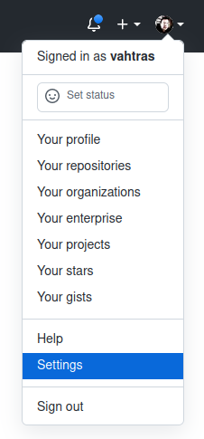

Notes 2023-01-26
Contents
Notes 2023-01-26#
new account#
We started with a new account to set up access to the KTH Github server. We need to create SSH keys with ssh-keygen. Choose all defaults be pressing enter, except for the password. ssh-keygen allows empty passwords but these can be idenitfied and blocked by servers you may want to connect to
$ ssh-keygen
Generating public/private rsa key pair.
Enter file in which to save the key (/home/user/.ssh/id_rsa):
Created directory '/home/user/.ssh'.
Enter passphrase (empty for no passphrase):
Enter same passphrase again:
Your identification has been saved in /home/user/.ssh/id_rsa
Your public key has been saved in /home/user/.ssh/id_rsa.pub
The key fingerprint is:
SHA256:sg6AvhEHbI9AofebPJjZckSE0RL/T023eUsIrNsLsnw bb1000@bat
The key's randomart image is:
+---[RSA 3072]----+
| o+=. |
|+ oo. . |
|o+..o + . |
|oo+o . + o + |
|.o.oo o S . + o |
|. oO o = o o . |
| o= O o + . . |
| oo = oE. . |
| . +. . |
+----[SHA256]-----+
In the .ssh subfolder we will have a key pair, a public and a private key in separate files, id_rsa.pub and id_rsa respectively. Copy-paste the content of the public key file
$ more .ssh/id_rsa.pub
ssh-rsa AAAAB3NzaC1yc2EAAAADAQABAAABgQC3s/u/QDy90uDQYm7/nrzXtANB9Mh/7xnPbNpoKTpT
5ZL3QJ0BlzhzK5gvFmQo2Fw/ivmJnnXUeEEUXaJ7I8C8kAUwPs6ca2FooBS6pJQLswhb4D4eH2K27+2r
2hTsPdlXjI4h0GitejYI4/0n4OSp00v8F6KWlIkin1y8dedJ5IzxjlEmGNRIZ8Iwr/ceE7nJZ9HmxB1u
8e9knYwH3kbaMXwNq+CKN31eyaaDIZaQyuXunhNqKR0Moe7+Xku6UDH+TBZEbl8G7M+eXkRLvT7oQJ/I
Zrz056QPdTCcFstmw5Tmat6590sAmKe2x4TrPOdriu51yIJsQwt5C7UBc4DNAnMEFnPyEgR57FnTmeIS
yT5jfMjN50/HCJGHW2sjhXEpz/ZNaDDTZTRY++GMpONTZuJOiy3k8QD+XTlmq21paS+rkDrKAj8ftkXX
jyiC9JQRacyKNOP5R4aNQ9GnFQOxGL7hd4wLtCNowt5gfD7/NnB1Unr1L4CcuT2pLx5iwD0= bb1000@
bat
to the Github profile settings

select SSH and GPG keys from the menu

Select New SSH key

In the Key field paste the public SSH key that you copied from the file .ssh/id_rsa.pub
Now you should be able to clone the class repository from the command line
$ $ git clone git@gits-15.sys.kth.se:user/git-2023-01-30
Cloning into 'git-2023-01-30'...
remote: Enumerating objects: 6, done.
remote: Counting objects: 100% (6/6), done.
remote: Compressing objects: 100% (3/3), done.
remote: Total 6 (delta 0), reused 5 (delta 0), pack-reused 0
Receiving objects: 100% (6/6), done.
Why we have conflicts#
When two or more have modified the same file git will be confused how they can be combined. In the web interface we have
Press Resolve conflicts